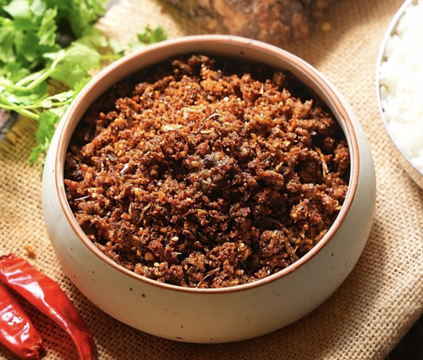

Kara Podi Recipe
Kara Podi, also known as Kanda Karam Podi, is a spicy and flavorful South Indian condiment made with crispy fried yam, roasted peanuts, lentils, spices, and tamarind. The ingredients are roasted to perfection, ground into a fine powder, and mixed with the fried yam to create a unique blend of textures and flavors. This versatile podi can be sprinkled over idlis, dosas, or mixed with rice and ghee for a delicious Andhra-style meal. It also serves as a seasoning for fried snacks, adding a spicy and tangy kick.
Ingredients
- 350 gms Yam
- 3-4 tbsp Oil (for frying yam)
- 2 tbsp Oil (for roasting other ingredients)
- 3 tbsp Peanuts
- 1 tbsp Chana Dal
- 8-10 Dry Red Chillies
- 12-15 Garlic Pods
- 1/2 tbsp Coriander Seeds
- 1/2 tsp Black Pepper
- 1 tbsp Sesame Seeds
- Salt (to taste)
- 1/2 tbsp Jaggery (optional)
- Small Gooseberry-sized Tamarind
Preparation
- Prepare the Yam:1). Smear your hands with oil to prevent itching, then deeply scrape
the yam skin and finely grate it.
- Fry the Yam:1). Heat 3-4 tbsp oil in a pan, add the grated yam, and fry on medium
flame, stirring occasionally, for about 15 minutes until crispy and golden brown, then transfer to a
plate to cool.
- Roast the Ingredients: 1). Heat 2 tbsp oil in a pan. Add peanuts and roast them until
golden and crisp, then transfer to a plate. In the same pan, add chana dal, dry red chillies, garlic
pods, coriander seeds, and black pepper. Sauté until the dal changes colour to golden brown. 2). Add
sesame seeds and allow them to splutter. Add salt and sauté for 30 seconds.Transfer all ingredients to a
plate and allow them to cool.
- Grinding the Podi:1). Once cooled, add all the roasted ingredients into a mixer
grinder. Add jaggery (if using) and tamarind. Grind into a fine powder and transfer to a plate.
- Final Mixing: Add the crispy fried yam to the powder. Squeeze and mix well to ensure
even blending.
- Storage:Store the Kanda Karam Podi in an airtight jar. It stays fresh for 15-20 days.
- Serving Suggestions: 1). Sprinkle over hot idlis, dosas, or mix with ghee rice. 2). Use
as a seasoning for potato fries, banana fries, or other fried snacks. 3). Serve with warm rice and a
dollop of ghee for an authentic Andhra-style meal.